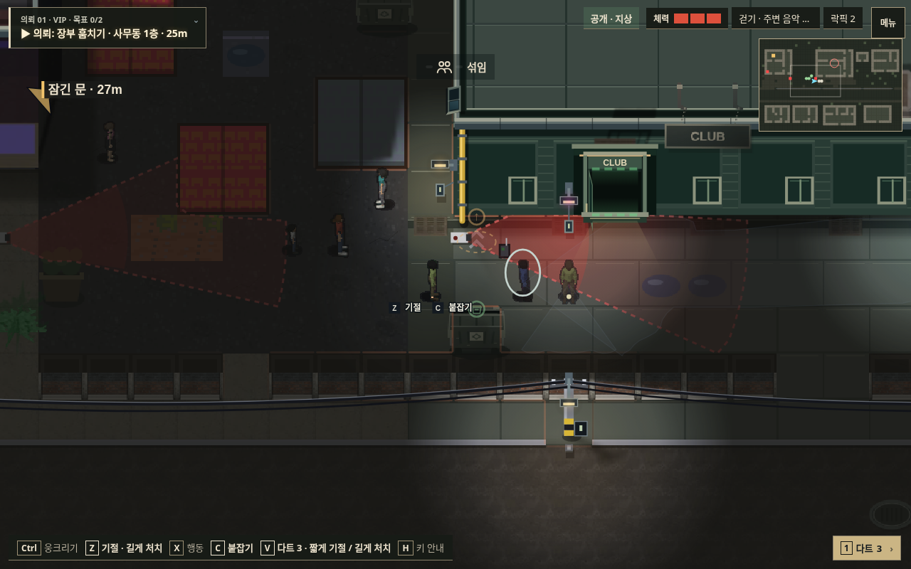
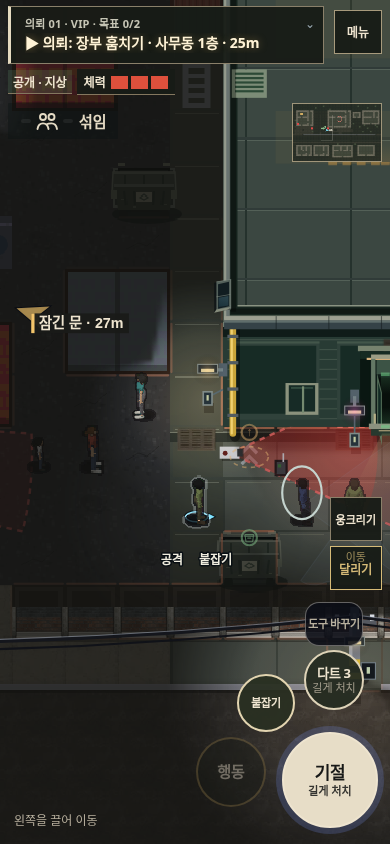

v141 · 모듈 구성과 이미지 수명 정리
게임 실행 · 구조·제거 목록·측정 방법
디코딩 픽셀은 브라우저에서 살아 있는 이미지의 RGBA 바이트 추정입니다. 실제 휴대폰 RAM/FPS 측정과 구분합니다.
| 항목 | v140 | v141 | 감소 |
|---|
| 배포 assets 폴더 | 20.04 MB | 7.67 MB | 61.7% |
|---|
| 현재 버전의 참조 에셋 | 8.86 MB | 7.67 MB | 13.5% |
|---|
| 초기 메뉴 디코딩 픽셀 추정 | 334.95 MB | 104.14 MB | 68.9% |
|---|
| 의뢰 m2 디코딩 픽셀 추정 | 356.08 MB | 233.40 MB | 34.5% |
|---|
| 의뢰 전환 후 디코딩 픽셀 추정 | 353.34 MB | 122.53 MB | 65.3% |
|---|
배포 폴더에는 누적된 옛 스크립트도 들어 있었습니다. 전체 참조 에셋의 감소는 약 13.5%입니다. 별도의 캐시 없는 로컬 HTTP 메뉴 검사에서는 리소스 본문이 7.54→3.85MB로 줄었고, 메뉴 뒤 월드 그리기는 250ms당 16→0회였습니다. 검사 장면의 배치와 시계는 통제했습니다.
PC · 같은 장면

v140 v141
v141터치 크기 · 같은 장면

v140 v141
v141측정 JSON · 실제 메뉴 로딩 · PC 이미지 소유권 · 터치 이미지 소유권 · 회귀 기록 · 배포 확인